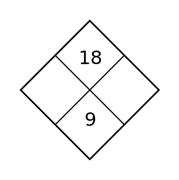
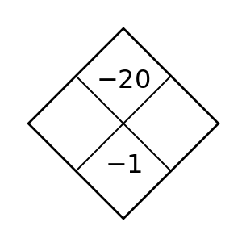
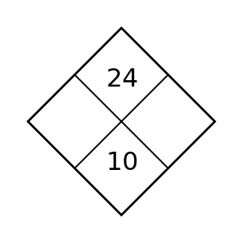
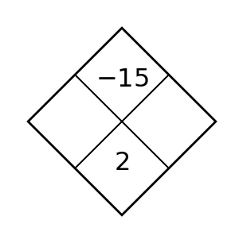

1
Fill the two side numbers so their product matches the top and their sum matches the bottom.

Fill the two side numbers so their product matches the top and their sum matches the bottom.
Point A is $(-3,4)$. State its x-coordinate and y-coordinate.
Which axis contains the point $(0,-6)$?
A graph crosses the y-axis at $(0,5)$. What does 5 represent on that graph?
Write the equation.
| x | y |
|---|---|
| 0 | 1 |
| 1 | 3 |
| 2 | 5 |
For $y=-x+6$, find the output at $x=4$.
Points $(1,2)$ and $(3,6)$ lie on a line. Find the change in y divided by the change in x.
Solve $x+3\gt8$ and describe the number-line graph.
Do $(0,3)$ and $(2,7)$ fit $y=2x+3$?
Which axis contains the point $(0,-6)$?
Solve $-2x\le 10$.
A theater has room for at most 120 people. If 87 are seated, write and solve an inequality for additional people $p$.
Fill the two side numbers so their product matches the top and their sum matches the bottom.

Describe the pattern in words.
| x | y |
|---|---|
| 0 | 2 |
| 1 | 5 |
| 2 | 8 |
The rule is “multiply the input by 4 then subtract 1.” Write it symbolically.
Continue the output pattern 5, 9, 13, 17.
Write the rule.
| x | y |
|---|---|
| 0 | 2 |
| 1 | 6 |
| 2 | 10 |
For $f(x)=3x-1$, find $f(4)$.
For the rule $y=2x+3$, find the output when input is 0.
Evaluate $3x+5$ when $x=-2$.
Is this a function?
| Input | Output |
|---|---|
| 1 | 3 |
| 1 | 5 |
| 2 | 7 |
The rule is “multiply the input by 4 then subtract 1.” Write it symbolically.
Evaluate $2(a-4)^2$ when $a=7$.
Evaluate $18\div3+2(4)$ using order of operations.
Fill the two side numbers so their product matches the top and their sum matches the bottom.

Find the constant rate of change.
| x | y |
|---|---|
| 0 | 1 |
| 1 | 4 |
| 2 | 7 |
| 3 | 10 |
A quantity increases by 5 every minute. Is the rate of change constant?
From $(2,3)$ to $(6,11)$, find the rate of change.
Classify $y=x^2-2$.
Classify the family.
| x | y |
|---|---|
| 0 | 2 |
| 1 | 4 |
| 2 | 8 |
Explain what “constant rate of change” means in a table.
Compute $-7+12$.
A quantity adds 7 each step. Which family is most natural?
A quantity increases by 5 every minute. Is the rate of change constant?
Compute $\frac34-\frac56$.
Compute $-2.5(4)$.
Fill the two side numbers so their product matches the top and their sum matches the bottom.

Relationship A is $y=2x+1$ and B is $y=2x-4$. State one similarity and one difference.
Compare the rates of A and B.
| x | A | B |
|---|---|---|
| 0 | 2 | 5 |
| 1 | 4 | 7 |
| 2 | 6 | 9 |
Two lines have the same slope but different y-intercepts. How will their graphs compare?
Simplify $2x+5+4x-3$.
Expand $3(x+4)$.
A plan costs 10 dollars plus 3 dollars per month; another costs 4 dollars per month with no start fee. Write one comparison statement.
Simplify $3x+5+2x-1$.
Are $5(x+2)$ and $5x+10$ equivalent?
Compare the rates of A and B.
| x | A | B |
|---|---|---|
| 0 | 2 | 5 |
| 1 | 4 | 7 |
| 2 | 6 | 9 |
Expand $4(x-3)$.
Factor $10x+15$.
Fill the two side numbers so their product matches the top and their sum matches the bottom.

Write a linear equation.
| x | y |
|---|---|
| 0 | 3 |
| 1 | 5 |
| 2 | 7 |
For $y=-x+4$, state the y-intercept and rate of change.
A delivery cost starts at 6 dollars and rises 2 dollars per mile. Write an equation.
A fee is 8 dollars plus 3 dollars per hour and totals 23 dollars. Write the equation.
Solve $x+4=11$.
Points $(0,-2)$ and $(3,4)$ lie on a line. Find the rate.
Solve $x-8=15$.
$5+2d=17$ models days $d$. Solve and interpret.
For $y=-x+4$, state the y-intercept and rate of change.
Solve $4x+3=27$.
Solve $5x-2=2x+16$.